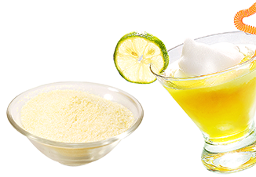
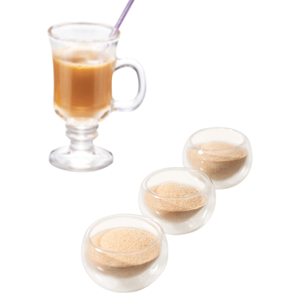
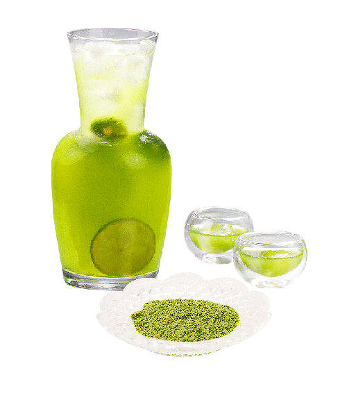
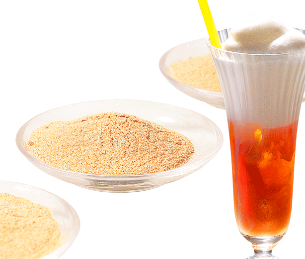
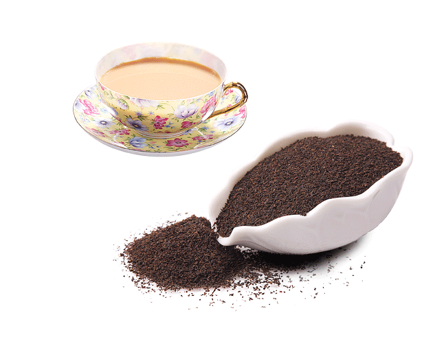

产品与服务
Products and Services
茶粉及浓缩茶汁
 1、冷溶性速溶茶粉
包括红茶、绿茶、乌龙茶、白茶、黑茶、黄茶速溶粉。产品溶解性、耐酸性和澄清度都好，适合于配制低糖茶饮料、调味茶饮料以及纯茶饮料。
Cold soluble instant tea
Instant tea types: black tea, green tea, oolong, white tea, dark tea and yellow tea. All tea powders retain their original color, aroma and flavor of tea leaves, with characteristics of good solubility, acid resistant and good clarity, ideal for making various pure tea drinks or flavor tea drinks such as ice tea, fruit juice tea, fruit-flavored tea, etc.
2、热溶性速溶茶粉
包括红茶、绿茶、乌龙茶、白茶、黑茶、黄茶速溶粉。产品保持茶叶原有的色、香、味，适合于制造固体奶茶、RTD奶茶饮料、冰淇淋、糖果、饼干等食品。
Hot soluble instant tea
Instant tea types include black tea, green tea, oolong, while tea, dark tea and yellow tea, All tea powders retain their original color, aroma and flavor of tea leaves, suitable for tea food products such as solid milk tea, ice cream, candy and biscuits.
3、浓缩茶汁
包括红茶、绿茶、乌龙茶、白茶、黑茶、黄茶浓缩汁。产品保持茶叶原有的色、香、味，适合于配制纯茶饮料、调味茶饮料以及低糖茶饮料。
Tea concentrates
Tea concentrates type: black tea, green tea, oolong, white tea, dark tea and yellow tea. All tea juice retains their original color, aroma and taste of tea leaves, has good solubility, ideal for making various pure tea drinks or flavor tea drinks such as ice tea, fruit juice tea, fruit-flavored tea, etc.
4、功能性速溶茶粉
包括高茶多酚、高儿茶素、高咖啡因、低咖啡因、高茶氨酸速溶粉。适合作为功能性食品、饮料或保健品的原料。
Functional instant tea
Functional instant tea includes high tea polyphenol, high catechin, high caffeine, low caffeine and high theanine, and can be used as ingredient materials of functional foods and drinks.
茶叶
1、红茶：包括印度红茶（阿萨姆、大吉岭、尼尔吉里），锡兰红茶（乌沃、汀布拉、康提等），滇红、祁红、肯尼亚红茶等等 ，适宜制作奶茶饮料、调味茶饮料、低糖红茶饮料以及餐饮渠道。
Black tea: includes Indian black tea(Assam, Darjeeling, Nilgiri), Ceylon black tea( Uva, Dimbula, Kandy) Yunnan black tea, Keemun, Kenya black tea, suitable for milk tea, flavored tea and low sugar beverage along with food service channel products.
2、绿茶：包括不同工艺绿茶（蒸青、炒青、烘青、晒青），不同树种（大叶种、小叶种），再加工绿茶（茉莉花茶等），适宜制作低糖绿茶饮料、调味茶饮料、纯茶饮料以及混合茶饮料。
Green tea: includes green tea of different technology(streamed tea, fried tea, baked tea and sun tea), different species (large tea leaf ,small tea leaf),re-processed green tea(jasmine tea), suitable for low sugar green tea, flavored tea beverage, pure tea beverage and blended drink
3、乌龙茶：包括闽北乌龙（武夷岩茶、闽北水仙、大红袍等），闽南乌龙（铁观音、黄金桂等）广东乌龙（凤凰单枞、凤凰水仙等），适宜制作纯茶饮料、混合茶饮料以及调味茶饮料。
Oolong tea: includes North Fujian Oolong(Wuyi Rock Tea, Shuixian Tea, Dahongpao Tea), South Fujian Ooling(Tieguanyin Tea, Huangjingui Tea) and Guangdong Oolng(Phoenix Dancong，Phoenix Shuixian),suitable for pure tea beverage,.blended dirnk and flavored drink.
4、 其它茶类：包括白茶、黑茶、黄茶等茶叶，适宜制作纯茶饮料、混合茶饮料以及调味茶饮料。
Other tea species: Includes white tea, dark tea and yellow tea, suitable for pure tea beverage,blended dirnk and flavored drink.
抹茶 ，包括蒸青抹茶、乌龙茶抹茶、红茶抹茶等， 适用于冰淇淋、饮料或烘焙食品等食品的抹茶粉。
Mocha powder, includes steamed green mocha, Oolong tea mocha, black tea mocha, suitble for icecream, drink or bake food.
天然植物
1、 天然植物提取物速溶粉、浓缩汁
包括菊花、罗汉果、枸杞、金银花、甘草、红枣、凉粉等四十多种药食两用植物的单体或复合速溶粉、浓缩汁产品。可应用于花草茶、花果茶、广东凉茶、日式混合茶等各类饮料的原料。
Powder and concentrates of botanical extracts
Currently producing power & concentrates for over forty medicinal plants such as chrysanthemum, honeysuckle, fructus momordicae, to name a few and is used in various drinks such as flower-herbal tea, flower-fruit tea, Guangdong herbal tea, Japanese blend tea, etc.
2、天然植物原料
raw material of natural plants
包括菊花、罗汉果、枸杞、金银花、甘草、红枣、凉粉等四十多种药食两用植物的原料。可应用于花草茶、花果茶、广东凉茶、日式混合茶等各类饮料的原料。
Also producing raw material for over forty medicinal plants such as chrysanthemum, honeysuckle, fructus momordicae, to name a few and is used in various drinks such as flower-herbal tea, flower-fruit tea, Guangdong herbal tea, Japanese blend tea, etc.
专业的服务
Professional Services
为客户提供茶叶及天然植物原料全面解决方案。
Our customers can get the following solutions with an overall solution of tea and botanicals
1、为客户提供关于茶叶原料、茶饮料、植物饮料及茶食品国内外市场分析报告，预测市场的发展趋势。
Offer our customers market analysis reports of tea, tea drinks, botanical drinks and tea foods both at home and abroad, including market forecasting.
2、为客户提供茶饮料和茶叶的相关专业知识的培训。
Provide our customers with professional knowledge training for the various tea and tea drinks.
3、为客户提供茶及天然植物饮料生产线设计及改进建议，设计茶饮料的各种生产工艺。
Offer consulting for production line design, improvement of tea and botanical drinks and to help customers design different production technique for different tea drinks.
4、为客户提供成熟茶类产品配方、推荐合适的原料，解答客户技术疑问，解决客户在茶粉、茶浓缩汁、茶叶应用方面的过程中的技术问题。
Provide formulas of tea products and recommend materials, supply application support on leaf tea, tea and botanical extracts.